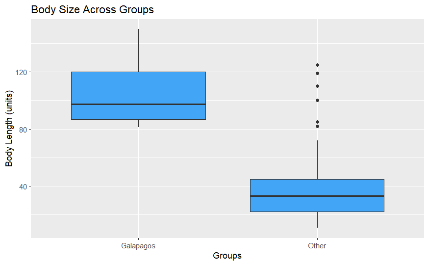
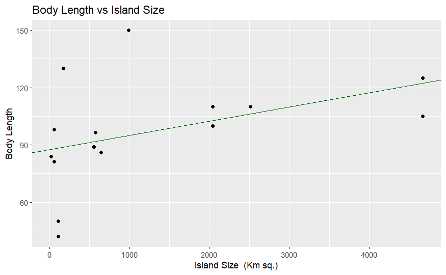

Galápagos vs Other Body Size Plot

Body Length vs Island Size Plot Insights
- Compares Galápagos and non-Galápagos tortoise sizes using a boxplot
- Galápagos tortoises tend to be larger
Interactive Galápagos Island Plot
Body Length By Island Interactive Plot Insights
- When you hover over an island you can see the species and carapace length
- Visualizes average tortoise body lengths across different Galápagos islands
- Circle size and color indicate body size: larger, yellow circles represent bigger tortoises and smaller purple circles represent smaller tortoises
- Highlights spatial trends that may reflect ecological or environmental influences
Body Length vs Island Size w Regression Plot

Body Length vs Island Size Plot Insights
- Displays a possible positive relationship between tortoise body length and island size
- Each point represents data from a different island
- The regression line shows a potential ecological scaling effect
Regression Coefficients
| Variable | Coefficient | P-value |
|---|
| Intercept | 87.608794 | 0.000000192 |
| Island Size | 0.007423 | 0.115 |